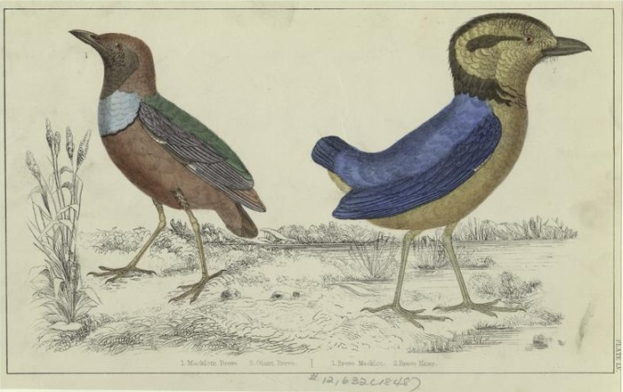
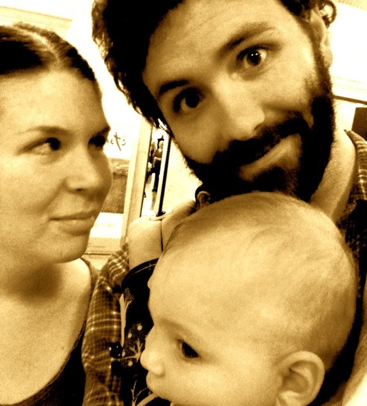
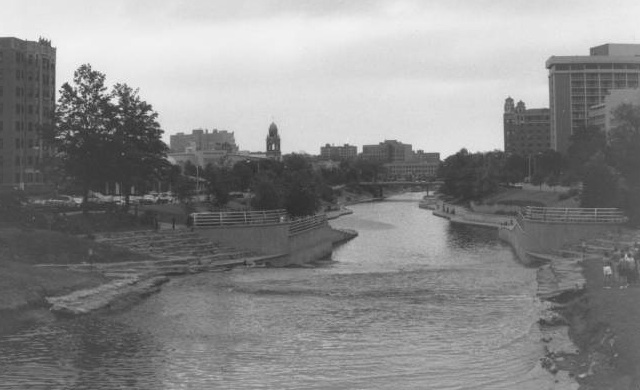

Mr. Blue Bison is the creative dumping ground for a couple of artistic wannabes - Jim & Bethany Vallandingham.
Jim & Bethany As Birds
The art we create is sporadic, varied, and of questionable value - but also spontaneous, wondrous, and special. Bethany's medium of choice typically involves a textile of some sort. Her sewing, stitching, and screen-printing projects leave their viewers breathless. When the air has returned to the room, it gets sucked right back out by Jim's prints and other sundries. Jim is a programmer by trade - for him, block and screen printing are a nice escape from the constant barrage of 1's and 0's we all face in this modern world. His work shows that his fingers' aptitude for pressing down on keys of a keyboard does not necessarily translate to artistic prowess.
Jim & Bethany & Child, For Reals This Time
Jim & Bethany have a formidable nest in the heart of Kansas City, Missouri that they share with their amazing infant daughter. If you are in the area, stop on by for some home-made pear wine, a game of Settler's of Catan, and some good conversation.
Come Visit Soon!